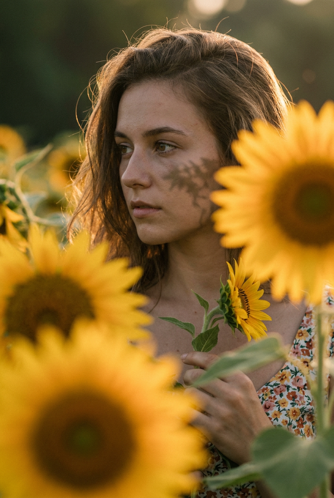
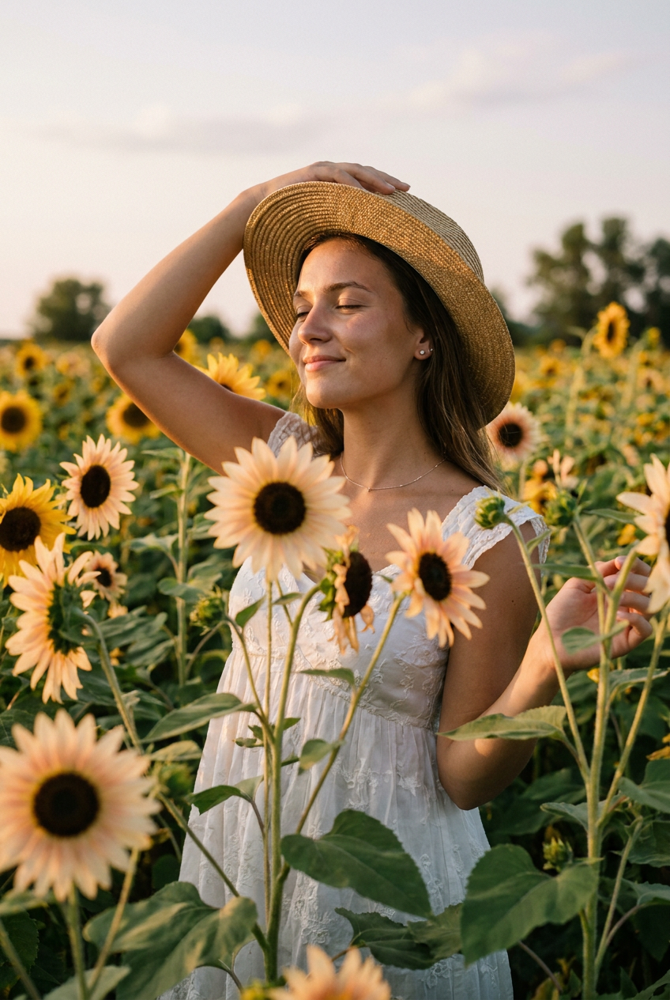
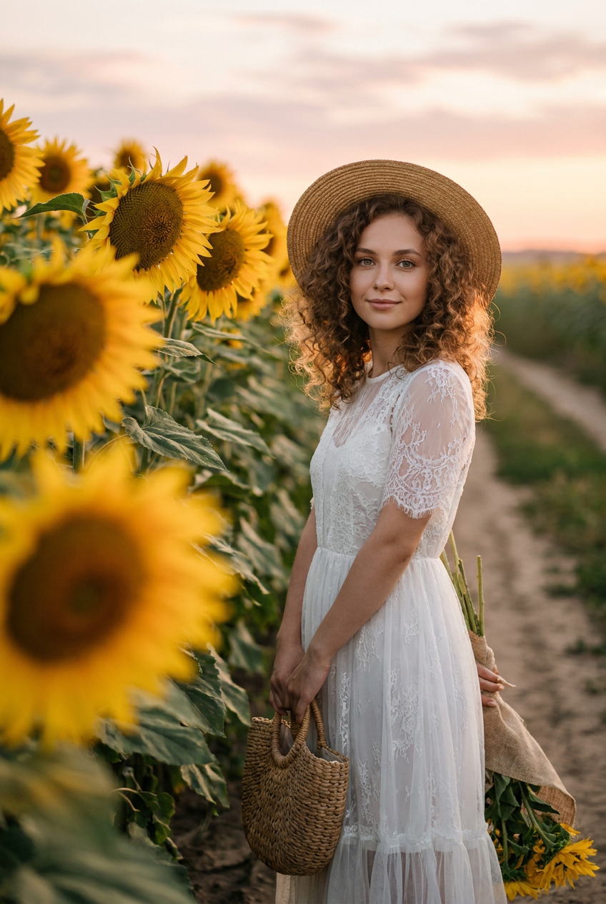
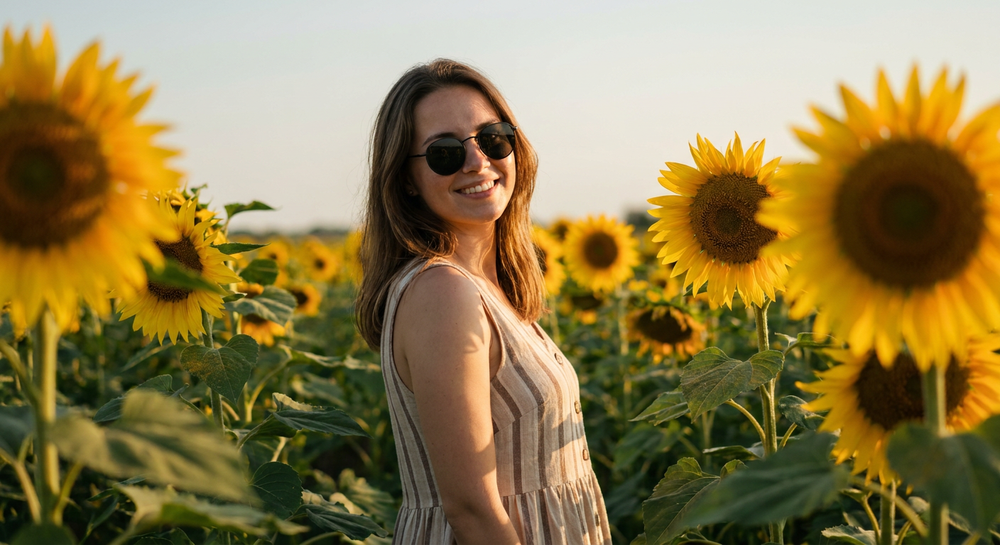
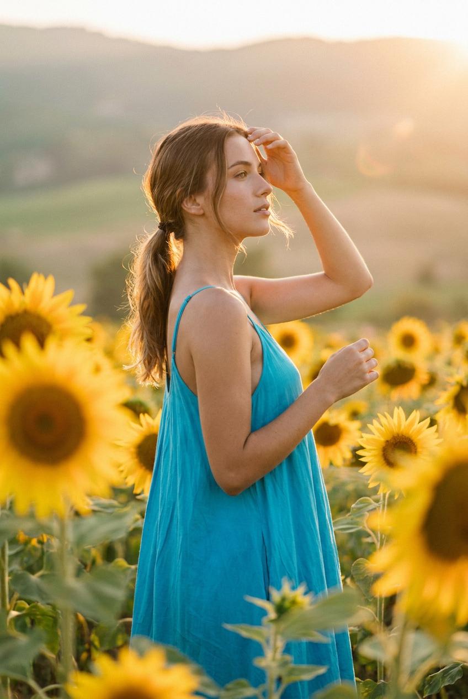
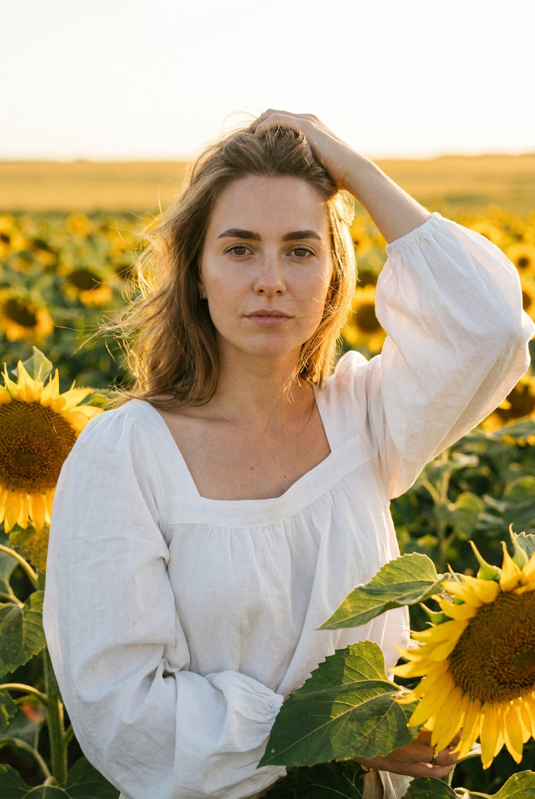
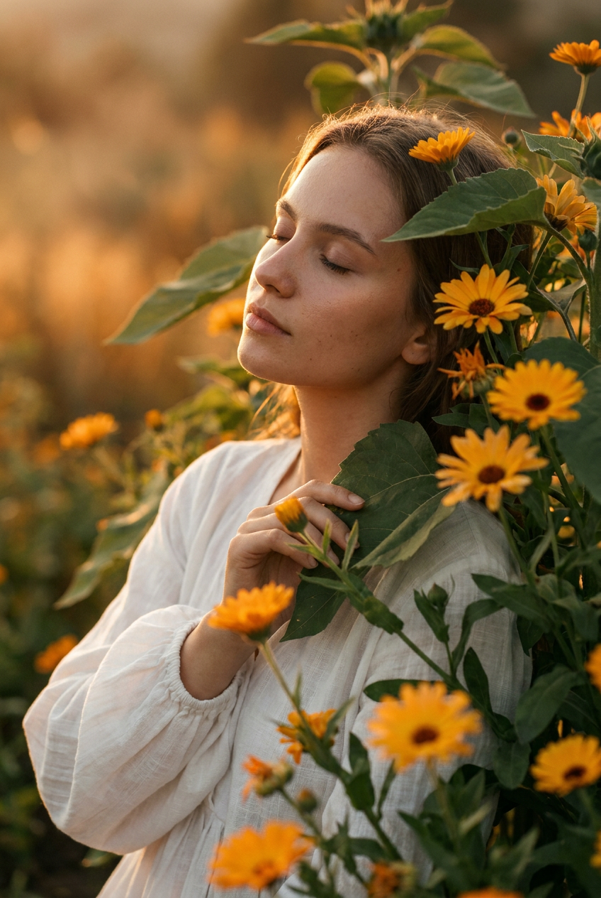
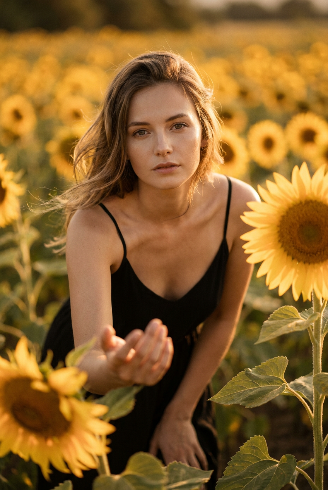
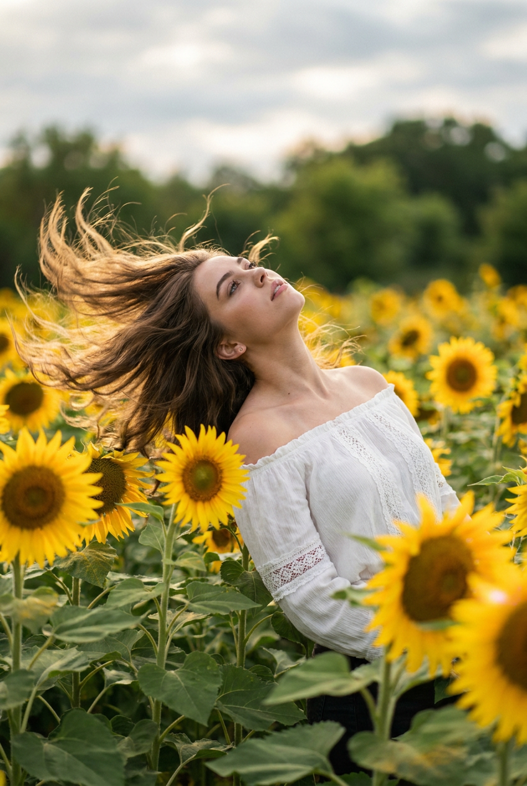
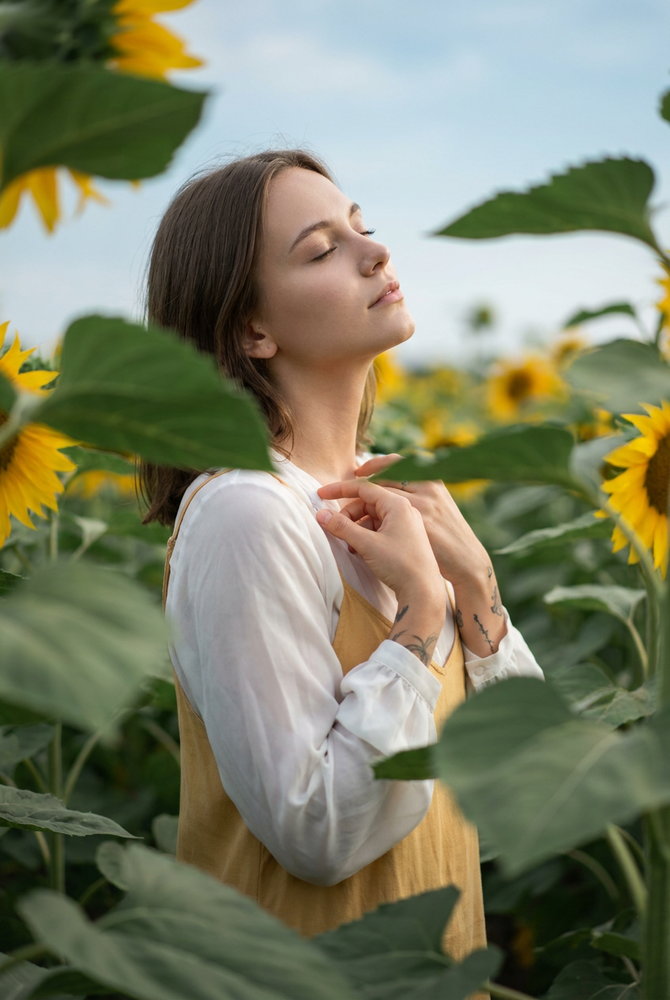

ИИ-фото с подсолнухами: 10 промптов для нейросети

Красивый кадр в поле подсолнухов сложно снять случайно: мешают жёсткий свет, ветер, неудачная поза и слишком плотный фон. Генерация помогает заранее задать композицию, настроение и детали образа, а затем получить серию вариантов без фотосессии и аренды локации.
В подборке — 10 сценариев для вертикальных ИИ-фото: от задумчивого портрета в сумерках до fashion-съёмки с жестом «пойдём со мной». Внутри есть соломенная шляпа, корзинка, очки, белое платье, яркий сарафан, съёмка сверху и эффект цветов на переднем плане.
Как сгенерировать такое фото: пошагово
Нужен снимок анфас при ровном свете, лицо в кадре целиком, без тёмных очков и головных уборов. Разрешение от 1000 пикселей по короткой стороне. Чем чётче исходник, тем точнее модель повторит черты.
Выберите сценарий ниже и нажмите «Копировать» — текст уйдёт в буфер целиком, вместе с командой сохранения внешности. Эта команда стоит первой строкой и отвечает за то, чтобы на выходе было ваше лицо, а не случайное.
Кнопка «Сгенерировать» рядом с каждым промптом открывает модель в новой вкладке. Nano Banana Pro работает с референсом лица — в отличие от моделей, которые генерируют портрет с нуля и узнаваемость теряют.
Промпт — в поле ввода, портрет — через загрузку референса. Порядок значения не имеет, но без референса команда сохранения внешности работать не будет: модели нечего сохранять.
Для сторис и ленты берите 9:16, для превью и обложек — 4:3. Первый результат редко идеален: если поза или свет ушли не туда, поправьте соответствующую часть промпта и запустите заново. Обычно хватает двух-трёх итераций.
10 промптов для генерации
1. Портрет в сумеречном поле
Строго сохранить внешность по загруженному референсу: черты лица, пропорции, мимику и текстуру кожи без изменений. Фотореалистичный вертикальный портрет в поле подсолнухов во время вечернего заката. В центре — молодая женщина, показанная по плечи и частично по корпус, в лёгком полуповороте влево. Она смотрит в сторону сквозь цветы, выражение лица спокойное и задумчивое, губы расслаблены. Вокруг много стеблей и крупных листьев. Передний план особенно выразительный: большие подсолнухи с жёлтыми лепестками занимают нижнюю и правую части кадра, некоторые цветы находятся вне фокуса и создают естественное foreground bokeh. Волосы слегка растрёпаны, отдельные пряди подсвечены тёплым контровым светом. На девушке наряд с открытыми плечами, ткань выглядит натурально. Мягкие сумеречные тени, кинематографичная цветокоррекция, малая глубина резкости, объектив 85 мм, f/1.8, высокая детализация кожи и ткани, вертикальное соотношение 4:5.
2. Шляпа среди нежных цветов

Строго сохранить внешность по загруженному референсу: черты лица, пропорции, мимику и текстуру кожи без изменений. Вертикальная фотореалистичная съёмка в густом цветочном поле на тёплом солнечном свету. Девушка стоит или слегка приседает среди подсолнухов и светлых цветов с нежно-персиковыми и кремовыми лепестками, у которых тёмно-коричневые сердцевины. Цветы переднего плана занимают большую часть изображения и образуют плотную природную рамку. Одной рукой девушка касается соломенной шляпы с широкими полями, словно поправляет её, вторая рука свободно опущена и частично скрыта листьями. Лицо повернуто к солнцу, глаза прикрыты или закрыты, на губах едва заметная улыбка. Мягкие тени от ресниц, золотистые блики на коже, естественная мимика. Волосы слегка выбиваются из причёски. Кинематографичный outdoor-портрет, малая глубина резкости, объектив 85 мм, f/2, тёплая цветокоррекция, вертикальный кадр 4:5.
3. Корзинка и белое платье

Строго сохранить внешность по загруженному референсу: черты лица, пропорции, мимику и текстуру кожи без изменений. Кинематографичный вертикальный портрет в поле подсолнухов на закате. На горизонте — пастельное небо с мягкими розовыми и оранжевыми оттенками, сбоку падает тёплый солнечный свет. Девушка стоит в правой или центральной части кадра и смотрит на фотографа с лёгкой улыбкой. В одной руке она держит небольшую соломенную корзинку, другой непринуждённо придерживает букет или ремешок. Поза расслабленная, кисти и пальцы выглядят естественно. На голове соломенная шляпа с круглой тульей и широкими мягкими полями. Объёмные локоны обрамляют лицо. Белое платье с короткими рукавами выполнено из кружева или тонкого тюля, хорошо видна воздушная полупрозрачная фактура материала. Подсолнухи уходят в глубину, дальний ряд мягко размывается. Объектив 50 мм, f/2.2, золотой час, натуральная кожа, вертикальный формат 4:5.
4. Очки и солнечная улыбка

Строго сохранить внешность по загруженному референсу: черты лица, пропорции, мимику и текстуру кожи без изменений. Фотореалистичный снимок молодой женщины в высоком поле подсолнухов в золотой час. Она находится в центре, слегка развёрнута к камере и улыбается, взгляд направлен в объектив. На лице круглые солнцезащитные очки в тёмной оправе, несколько прядей обрамляют щёки. На девушке лёгкий сарафан без рукавов с тонкими вертикальными полосками бежевого, коричневого и оливкового оттенков. Натуральная ткань имеет заметные складки и мягкую фактуру. Поле уходит вдаль рядами, создавая перспективу. Крупные подсолнухи слева и справа формируют обрамление, часть лепестков и листьев переднего плана размыта в боке. Свет тёплый, контраст мягкий, кожа реалистичная, без пластикового эффекта. Съёмка на 50 мм, диафрагма f/2, естественная глубина резкости, кинематографичная летняя цветокоррекция, вертикальный кадр 4:5.
5. Бирюзовое платье на холмах

Строго сохранить внешность по загруженному референсу: черты лица, пропорции, мимику и текстуру кожи без изменений. Вертикальный фотореалистичный кадр в поле подсолнухов на фоне далёких холмов. Съёмка проходит в золотой час: тёплый солнечный свет, лёгкая атмосферная дымка, мягкие блики на лепестках. Девушка стоит на среднем плане в центре, повернувшись к камере на три четверти. Одна рука поднята к виску или лбу — она поправляет волосы либо прикрывается от солнца, вторая свободно опущена. Взгляд направлен вдаль, выражение лица спокойное. Волосы собраны в низкий хвост или мягкий полупучок, у лица выбиваются отдельные пряди. На ней ярко-бирюзовое летнее платье на тонких бретелях, с мягкой посадкой по талии и лёгкой юбкой. Ткань напоминает шёлк или тонкий хлопок, видны естественные заломы. Подсолнухи занимают передний план и уходят к горизонту. Объектив 70 мм, f/2.8, вертикальный формат 4:5.
6. Fashion-портрет на закате

Строго сохранить внешность по загруженному референсу: черты лица, пропорции, мимику и текстуру кожи без изменений. Летний fashion-editorial в поле подсолнухов, фотореалистичный вертикальный outdoor-портрет. Солнце уже низко, золотой час даёт тёплое свечение, мягкие тени и небольшие отражённые блики на листьях. За моделью тянутся бесконечные ряды подсолнухов, ближайшие цветы заметно размыты и создают насыщенное боке. Девушка стоит в центре и прямо смотрит в камеру. Одна рука поднята к голове и легко придерживает волосы, плечи опущены, шея чуть вытянута вперёд. В выражении лица спокойствие и лёгкая задумчивость. Волосы уложены естественно и немного развеваются ветром, макияж минимальный, кожа с живой текстурой. На ней современный летний образ из лёгкой натуральной ткани, без перегруженных деталей. Кинематографичный цвет, натуральная пластика тела, объектив 85 мм, f/1.8, вертикальное соотношение 4:5.
7. Умиротворение среди листьев

Строго сохранить внешность по загруженному референсу: черты лица, пропорции, мимику и текстуру кожи без изменений. Вертикальный кинематографичный портрет в саду или поле с тёплым вечерним освещением. Молодая девушка стоит вполоборота, почти в профиль, а часть её волос скрыта зелёной листвой и цветами. Глаза закрыты, голова немного наклонена набок, губы расслаблены, выражение лица умиротворённое. Мягкий боковой свет очерчивает лицо, вокруг волос заметен тонкий золотистый rim light. Одна рука поднята рядом с верхней частью тела и частично спрятана в листьях, вторая может оставаться вне кадра. На девушке свободная белая блуза или платье с объёмными рукавами; ткань тонкая, мягкая, с естественными складками. Открытая кожа имеет реалистичную текстуру, макияж почти незаметен. Фон наполнен тёплым зелёно-золотым боке. Съёмка на 85 мм, f/2, мягкий контраст, вертикальный кадр 4:5.
8. Жест «пойдём со мной»

Строго сохранить внешность по загруженному референсу: черты лица, пропорции, мимику и текстуру кожи без изменений. Фотореалистичный вертикальный fashion-портрет в море подсолнухов на золотом часу. Небо почти не видно: весь фон заполнен цветами, а дальние ряды растворяются в сильном боке. Цветокоррекция тёплая, с лёгким винтажным золотисто-янтарным оттенком, свет насыщенный жёлтый, но без жёстких провалов в тенях. Девушка стоит или слегка приседает среди стеблей и смотрит в сторону камеры. В её лице спокойное, немного задумчивое выражение. Одна рука вытянута вперёд жестом «пойдём со мной», пальцы частично перекрыты крупными цветами переднего плана, будто фотограф снимает сквозь растения. Поза естественная, без напряжения в плечах и кистях. Волосы и одежда слегка колышутся от ветра. Крупные подсолнухи близко к объективу дают мягкое размытие. Объектив 50 мм, f/1.8, вертикальный формат 4:5.
9. Лёжа лицом к небу

Строго сохранить внешность по загруженному референсу: черты лица, пропорции, мимику и текстуру кожи без изменений. Вертикальная фотореалистичная outdoor-съёмка в летнем поле подсолнухов с низкой или средней точки. Передний план заполнен крупными цветами и зелёными листьями: ближние детали остаются достаточно резкими, средний план становится мягче, дальний фон растворяется в cinematic bokeh. Девушка лежит или полулежит среди растений, тело слегка развёрнуто, голова запрокинута назад и обращена к небу. Взгляд направлен вверх, поза расслабленная и романтичная, ощущение движения создаёт лёгкий ветер в волосах и листьях. Одна рука может скрываться за листвой или цветком переднего плана. Подсолнухи окружают модель со всех сторон и выглядят частью единой природной композиции. Летняя атмосфера, мягкий солнечный свет, натуральная кожа, реалистичные пропорции тела, съёмка на 35 мм, f/2.2, вертикальное соотношение 4:5.
10. Белая блуза и спокойный свет

Строго сохранить внешность по загруженному референсу: черты лица, пропорции, мимику и текстуру кожи без изменений. Кинематографичный вертикальный портрет в поле подсолнухов при мягком рассеянном дневном свете. Небо имеет лёгкий голубоватый оттенок, освещение нежное, без резких теней. Девушка находится в центре и стоит вполоборота. Голова чуть откинута вверх, глаза закрыты или взгляд направлен над цветами, выражение лица спокойное и умиротворённое. Волосы собраны мягко, у висков выбиваются отдельные пряди. На ней лёгкая белая полупрозрачная блуза или топ с длинными рукавами, складчатая ткань хорошо читается; под верхним слоем виден тёплый светлый наряд желтоватого оттенка. Руки согнуты у груди или плеч, одна ладонь касается другой руки. Подсолнухи обрамляют модель, часть стеблей и лепестков уходит в нерезкость. Натуральная кожа, реалистичная ткань, объектив 85 мм, f/2, вертикальный формат 4:5.
Что важно учесть в этом стиле
Главный эффект таких кадров создают не сами подсолнухи, а глубина сцены. Просите нейросеть разделить изображение на передний, средний и дальний планы: крупные цветы рядом с объективом дают обрамление, модель остаётся главным объектом, а дальние ряды уходят в мягкое боке.
Для романтичного результата лучше работают золотой час, рассеянный свет и естественная мимика. Если нужен fashion-акцент, добавьте конкретный объектив, диафрагму, фактуру ткани и положение рук. Слишком общие формулировки часто приводят к лишним пальцам, неестественной улыбке и плоской композиции.
Идеи для вариаций
- Замените закат на раннее утро с холодной голубой дымкой.
- Добавьте плетёную сумку, букет полевых цветов или клетчатый плед.
- Попросите съёмку после дождя: капли на листьях и влажная фактура почвы добавят объёма.
- Сделайте серию в одной локации с разными образами: белое платье, джинсовая куртка, льняной костюм.
- Поменяйте формат на 9:16 для сторис или на 1:1 для аватарки.
Как собрать свой промпт
Сначала укажите формат и тип кадра: вертикальный портрет, съёмка по пояс или полный рост. Затем опишите локацию, время суток и свет. После этого добавьте позу, направление взгляда, эмоцию, одежду и детали переднего плана. Такая последовательность помогает модели не потерять главные условия.
В конце задайте технические параметры: объектив 50 или 85 мм, диафрагма f/1.8–f/2.8, малая глубина резкости, натуральная кожа, вертикальное соотношение 4:5. Для стабильного образа используйте один референс, а изменения вносите по одному — например, сначала меняйте платье, затем свет или положение рук.
Ошибки, из-за которых кадр не получается
- Слишком много условий в одной фразе. Разделяйте сцену, позу, одежду и параметры съёмки на отдельные смысловые блоки.
- Не задан передний план. Без указания на крупные цветы изображение часто выглядит как плоский фон с редкими подсолнухами.
- Размытые требования к рукам. Описывайте, какая рука поднята, что она держит и где находится вторая.
- Нереалистичная кожа. Добавляйте натуральную текстуру, минимальный макияж и отсутствие пластикового эффекта.
- Слишком сильный HDR. Просите мягкий контраст и рассеянный свет, иначе лепестки и лицо потеряют естественные оттенки.
Частые вопросы
Как сделать такое ИИ-фото бесплатно?
Для первых попыток подойдут Kandinsky и Шедеврум: они позволяют генерировать изображения бесплатно или в рамках доступных лимитов, но точность лица и работа с референсом могут быть нестабильными. Krea AI и Arena.ai удобны для сравнения вариантов, однако доступные функции и лимиты меняются. Не все сервисы одинаково хорошо принимают фотографию-референс: иногда они используют её только как общее настроение, а не как точную основу лица. Перед загрузкой чужого снимка получите разрешение.
Как сохранить лицо по фотографии-референсу?
Загружайте чёткий снимок без сильных фильтров, очков и перекрывающих лицо прядей. В промпте отдельно укажите, что нужно сохранить форму глаз, бровей, носа, губ и овал лица, но не перегружайте описание десятками внешних признаков. Если сервис поддерживает силу референса, начните со среднего значения и сделайте 3–5 вариантов.
Какой формат выбрать для фото с подсолнухами?
Для портрета и публикации в соцсетях подойдёт вертикальное соотношение 4:5. Для сторис лучше использовать 9:16, а для квадратной аватарки — 1:1. Сразу указывайте формат в промпте и проверяйте, чтобы модель не обрезала шляпу, руки или крупные цветы переднего плана.
Почему нейросеть искажает руки и цветы?
Сложные перекрытия — кисть среди листьев, пальцы за лепестками, несколько рядов цветов — повышают вероятность ошибок. Описывайте одну главную руку и не добавляйте много мелких объектов. Если результат почти удачный, исправляйте изображение локально: отдельно маскируйте кисть, лицо или передний план, а не перегенерируйте всю сцену.